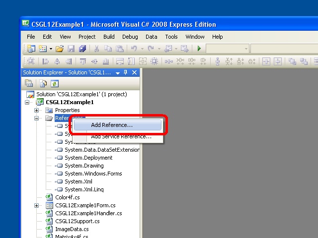
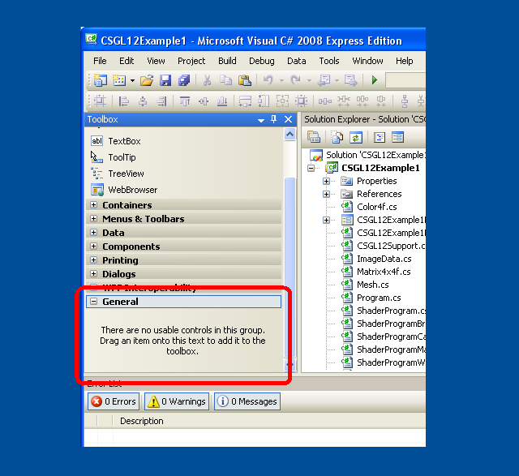

C# OpenGL sučelje
za Windows operacijski sustav
Colin Fahey

CSGL12Control na Form, pokazuje "fraktalna" pixel shader program i GDI+ crtanje kopirati na tekstura

Dva CSGL12Control instanci na Form, prikazano pixel shader programe i tekstura

3D avatar da roams desktopu i mogu biti premještene s pokazivača
1. Software
Ova verzija ovog dokumenta treba samo biti uključeno u "CSGL12" softvera. Ako ne možete pronaći program, molimo idite na sljedeću web stranicu za preuzimanje programa:
http://colinfahey.com.
2. Sve o računalu C# kod u C# OpenGL sučelje (CSGL12) je u "javnom vlasništvu"
Napisao sam sve u C# broj računala unutar C# OpenGL sučelje (CSGL12).
Izjavljujem sve od C# računalni kod unutar C# OpenGL sučelje (CSGL12) da se u "javnoj domeni."
Dakle, na računalu kod se može koristiti za bilo koju svrhu (komercijalne ili privatne), bez plaćanja, bez ograničenja, bez obaveza i bez potvrdni originalni autor.
Kôd se može mijenjati, ili dijelove reused, bez ograničenja i bez obaveza i bez potvrdni originalni autor.
Na primjer programi uključuju malu količinu računalo kod (konkretno, "shader računalo kod) koju je napisao drugih ljudi." Takvi kod nije unutar sučelja samog trivially i može biti uklonjena. Takav broj je samo da pokaže jednostavnost korištenja sučelje za stvaranje i korištenje "shader" programa.
3. Uvod
"CSGL12" je zbirka slika C# računalni kod koji implementira sučelje za biblioteku OpenGL grafika (uključujući sve nastavke od OpenGL do godine 2007) za Windows operativnog sustava.
The C# računalni kod datoteke u zbirci "CSGL12" olakšavaju dodavanje OpenGL crtanje na bilo koji softver C# / .NET s "Form" (jedan primjer od "System.Windows.Forms.Form").
The "CSGL12" zbirka slika sadrži računalni kod datoteku pod nazivom "CSGL12Control.cs", koji definira klasa zove "CSGL12Control", izvedene iz "System.Windows.Forms.Control". Svaka instanca "CSGL12Control" predstavlja nezavisnu OpenGL crtanje području. To je vrlo lako dodati više instance CSGL12Control na Form (jedan primjer od System.Windows.Forms.Form).
4. Karakteristike i zahtjeve "CSGL12"
Kod je samo za Windows operativnim sustavima koji podržavaju .NET 2.0 Framework (Windows 2000, Windows XP, Windows Vista, Windows 7)
Kod može biti sastavljeni koristeći "Microsoft Visual C# 2008 Express Edition" (besplatan kompajler), ili slično C# kompilatora.
Kod zahteva da građena sa "[X] Allow unsafe code" graditi opciju odabrana tako da optimizirana sliku kopiranjem podataka funkcija se može koristiti. Ako ste stručni C# programer ćete moći lako identificirati dijelove C# kod koji zahtijevaju "unsafe" opcija i onemogućiti ih, ako to želite ili obavezna. Image kopiranje podataka je 10 puta brže nego kod korištenja "unsafe" alternativno, i to je razlog zašto je takav broj koji se koristi. Ako izgrade DLL koja sadrži sve od "unsafe" kod, zatim projekt koji se koristi da DLL ne treba biti izgrađen s "unsafe" izbor, i tako možete zaključiti da je u nedostatku "unsafe" opcija u projektu ne impliciraju dodatne sigurnosti (zbog brojnih DLL datoteke koje se koriste implicitno ili eksplicitno koje je program sadrži "nesigurne" code).
Koda može se koristiti i kompilirane od bilo koje od sljedećeg:
Microsoft Visual C# 2008 Express Edition
Microsoft Visual Studio 2008
Microsoft .NET 3.5 SDK
SharpDevelop
Mono Project
Kod većine OpenGL nudi ekstenzije (kroz godinu 2007), uključujući "vertex shaders" i "pixel shaders".
Kôd 1570 pruža funkcije vezane za OpenGL:
336 GL functions
51 GLU functions
19 WGL functions
1164 extensions
Kôd nudi neke alternativne varijacije u 1570 funkcija parametra s različitim vrstama, za praktičnost.
Kod više od 3244 definira konstante za OpenGL.
Kôd čini moguće imati višestruke OpenGL crtanje kontekstima, sve animacija samostalno, na bilo kojem "Form".
Klikom na "CSGL12Control" "ulazni fokus" daje mu omogućava naknadne tipkovnice i miša kotača ulaz. Cursor klikove i pokreti su primili kada pokazivač unutar pravokutno područje jedan primjer od "CSGL12Control".
Kod funkcije uključuju pokazati kako ćete to učiniti OpenGL neke zajedničke poslove u C# i .NET.
Koda popisima svih OpenGL konstante i funkcije abecednim redom u "class GL" u "GL.cs", što je lako utvrditi je li bilo kakvih konstanta ili funkcija je nestalo (što je vjerojatno, osim za ekstenzije usvojen nakon godinu 2007).
Primjer programa pokazuju kako GDI+ crtanje na Bitmap, a zatim kako da kopirate Bitmap u OpenGL tekstura.
To omogućuje tekst i drugih GDI+ crtež mogućnosti da doprinesu jednoj OpenGL sceni.
The GDI+ Bitmap može biti ažurirana i učitane u jednom OpenGL texture onoliko često kao nekoć po OpenGL okvira.
Primjer programa pokazuju kako birati između nekoliko različitih "pixel shader programs" dok se program izvodi.
Primjer programa pokazuju kako pisati OpenGL buffers za slikovne datoteke (JPG, BMP, GIF, PNG).
Pritisnite Shift + 0 (shift-nula) to napisati OpenGL tampon za slikovne datoteke.
Spomenuti primjer pokazuje kako kod sastavljanja "GL.cs" u DLL u datoteku, a zatim dodao da DLL file na drugi projekt, mogu spriječiti Microsoft code editora (npr. Microsoft Visual C# 2008 Express Edition, itd.) s "IntelliSense" (kontekst-sensitive kod završetka) iz postajući često i uporno ne reagira (uzastopno zaustavljanjem za mnoge sekunde, čime je urednik totalno neupotrebljiv). Imajući "GL.cs" datoteci direktno uključeni u bilo kojem projektu uređuje jedan Microsoft code editor nije praktična, osim ako osoba koja je spremna da ustraje na sporost u editor. Ovaj problem je pogođena Microsoft Visual Studio 2003, 2005, 2008, i vjerojatno će utjecati na 2010 verziju, previše.
Primjer koda pokazuje korištenje višestrukih primjera "CSGL12Control" na "Form".
Primjer koda sadrži kôd za upućivanje 3D "avatar" da roams radnu površinu od Windows.
5. Primjer programa uključene s "CSGL12"
5.1 "CSGL12DLL"
Projekt pod nazivom "CSGL12DLL" proizvodi DLL zove "CSGL12DLL.dll" datoteku koja sadrži "class GL" (definirano u C# datoteku "GL.cs").
Stavljanje u "class GL" na DLL datoteku, a zatim pomoću DLL da se u ostalim projektima koji koriste "class GL", pomaže izbjegli ekstremnih problema sa svim Microsoft kod urednika sa IntelliSense značajka. Korištenje C# datoteku GL.cs direktno u projekt bi uzrokovati nikakve Microsoft kôd editor s IntelliSense značajka da postane potpuno neupotrebljiv i ne reagira gotovo kontinuirano obzirom na neefikasnost u IntelliSense značajku (i činjenica da IntelliSense očito blokira glavnog programa thread of the editor ).
Ako koristite C# kod urednika koji nije produced by Microsoft (npr. "SharpDevelop", "MonoDevelop", itd), onda možete jednostavno uključiti "GL.cs" datoteku izravno u svoje projekte, a ti bi se vjerojatno neće steći bilo kakve koristi od korištenja "CSGL12DLL.dll".
5.2 "CSGL12Control"
Projekt pod nazivom "CSGL12Control" proizvodi DLL zove "CSGL12Control.dll" datoteku koja sadrži "class CSGL12Control" (definirano u C# datoteku "CSGL12Control.cs").
Stavljanje u "class CSGL12Control" na DLL datoteku, omogućava da "Control" (tj. klasa nastala od "System.Windows.Forms.Control") se dodaje u "Toolbox" od Microsoft Visual C# 2008 Express Edition (i slični C# urednici). Imajući "CSGL12Control" u "Toolbox" olakšava za osobu da biste dodali jedan primjer od "CSGL12Control" na "Form" u "Designer" (npr. neke osobe mogu jednostavno korištenje pokazivača za odabir i povucite jedna instanca "CSGL12Control" iz "Toolbox" na "Form").
The object "CSGL12Control" upravlja jedna OpenGL crtanje kontekstu. Višestruke instance "CSGL12Control" mogu koegzistirati na "Form".
5.3 "CSGL12Example1"
Projekt pod nazivom "CSGL12Example1" stvara izvršnu datoteku programa (EXE) "CSGL12Example1.exe" imenom. Program koristi "CSGL12DLL.dll" i "CSGL12Control.dll" prikazati jedan primjer od CSGL12Control i izvući koristi kub OpenGL.
Program demonstrira korištenje četiri različite "pixel shaders" "(fraktalna, cigla, drvo," i "crtani film)."
Program također demonstrira upotrebu "GDI+", a .NET crtanje knjižnicu, izvući tekst i druge oblike "Bitmap" na objekt (a "GDI+" objekt), a zatim kopirati podatke iz slika koje "Bitmap" na "texture" u OpenGL, čime se dozvoljava sliku nacrtani by "GDI+" da se pojave u OpenGL crtanje. Ova mogućnost je vrlo korisna jer OpenGL nedostaju mnogi od 2D crtanje značajke koje se nalaze u "GDI+" i slično 2D crtanje libaries.
5.4 "CSGL12Example2"
Projekt pod nazivom "CSGL12Example2" stvara izvršnu datoteku programa (EXE) "CSGL12Example2.exe" imenom. Program koristi "CSGL12DLL.dll" i "CSGL12Control.dll" prikazati dva primjera CSGL12Control, svaki od kojih je jedan privlači kocka koristeći OpenGL.
Program ima "SplitContainer" "Control" na "Form". Svaki od dva područja u "SplitContainer" sadrži instancu CSGL12Control. Dakle, osoba može prilagoditi položaj u Splitu između dva primjera CSGL12Control. To pokazuje fleksibilnost u CSGL12Control.
Jedan od primjera CSGL12Control šalje događaje na niz događaja koje rukuju na primjer od "CSGL12Example2Handler1.cs", koji koristi isti broj kao "CSGL12Example1Handler.cs" u "CSGL12Example1" primjer projekta. Dakle, jedan od primjera CSGL12Control privlači jedna kocka s jednim odabranim "pixel shader" od četiri dostupna "pixel shaders".
Drugi primjer od CSGL12Control šalje događaje na niz događaja koje rukuju na primjer od "CSGL12Example2Handler2.cs", koji privlači jedna kocka koristeći tekstura sliku (ili ako je "tabla za igranje dama" obrazcem Slikovna datoteka zove "image.jpg" nije pronađena).
5.5 "CSGL12Avatar"
Projekt pod nazivom "CSGL12Avatar" stvara izvršnu datoteku programa (EXE) "CSGL12Avatar.exe" imenom. Program koristi "CSGL12DLL.dll" i "CSGL12Control.dll" povući kubus koristeći OpenGL na "Form" bez granica, sa color temelji transparentnost omoguæi, povući 3D "avatar" da roams na desktop Windows području.
The avatar kreće se može povući i kliknuo na novu lokaciju pomoću pokazivača. Dvostrukim klikom na avatar učinit će ga nestati. Iako je kod samo privlači jedna kocka, OpenGL može se koristiti za druge stvari nacrtati.
Višestruke instance u "avatar" program može biti pokrenut. Ovako, mnogi nezavisni "avatar" slučajevima moguče lutaju Windows desktop. Ovo je zabavna. Ekspert C# programer može uživati u pronalaženju načina da koordinira aktivnosti "Avatar" od mnogih takvih slučajeva.
Nažalost, stopa po kojoj se objekt s Window transparentnost se ažuriraju na ekranu je puno sporiji nego što je stopa po kojoj se može izvući OpenGL. The "Avatar" ažuriranja samo 10 puta u sekundi. Ne znam ako se to može poboljšati.
5.6 "CSGL12BuiltExecutableExamplesForReference"
Direktorij sadrži DLL zove "CSGL12BuiltExecutableExamplesForReference" datoteke i datoteke EXE produced by svih primjeru projekata. Ove datoteke se dostavljaju kao referenca, tako da se slika može biti ispitan odmah, čak i ako osoba nema mogućnost sastaviti razne projekte iz pod uvjetom C# kod.
5.7 "CSGL12UsefulCode"
Direktorij sadrži C# zove "CSGL12UsefulCode" datoteke koje bi mogle biti korisne za ljude koji žele učiniti uobičajena crtež poslovanje s OpenGL. Direktorij sadrži DLL slika "CSGL12DLL.dll" i "CSGL12Control.dll" za praktičnost.
Koda u tom direktoriju class definira različite vrste, kao što su Color4f, Vector3f, Matrix4x4f, Triangle, Mesh, ImageData, Texture, ShaderProgram, itd. Kôd je prilično brz, ali broj je namijenjen samo inspiriraju ljude da razviju svoje vlastite implementacije.
6. CSGL12 datoteke
The "CSGL12" zbirke C# računalni kod datoteka sadrži datoteke prikazane u sljedećem dijagramu:

The "CSGL12" zbirke C# računalni kod datoteka sadrži datoteke prikazane na ovom dijagramu.
The "CSGL12" softver uključuje i projekte za stvaranje dva DLL datoteke ("CSGL12DLL.dll" i "CSGL12Control.dll") prikazano u dijagramu. Te dvije DLL datoteka može biti kreiran kako bi je više prikladan za izradu programa koji koriste OpenGL, ali moguće je izraditi programe koristite samo C# datoteke direktno.
7. "namespace CSGL12" i "class" vrste
The "CSGL12" zbirke C# računalni kod datoteka definira "namespace CSGL12" i "class" tipovi prikazani u sljedećem dijagramu:

The "CSGL12" zbirke C# računalni kod datoteka definira "namespace CSGL12" i "class" tipovi prikazani u ovom dijagramu.
Program koji se OpenGL crtanje može biti kreirana koristeći samo "class GL" (koristeći C# datoteku GL.cs izravno ili pomoću DLL datoteku CSGL12DLL.dll koji također sadrži "class GL"). Međutim, koristeći "class CSGL12Control" (pomoću C# datoteku CSGL12Control.cs izravno ili pomoću DLL datoteku CSGL12Control.dll koji također sadrži "class CSGL12Control") čini dodavanjem OpenGL crtanje na Form (System.Windows.Forms.Form) lako i povoljno.
The C# klase Color4f, CSGL12Support, ImageData, ..., na dnu je dijagram se nude samo za praktičnost. Oni klasama olakšavaju izraditi programe koji koriste OpenGL izvući. Međutim, možda će već imati nastavu koja obavljaju poslove u tim razredima, ili možete odabrati hoćete li stvoriti slične klase koje obavljaju poslove ili na drugi način efikasnije. Oni se nude kao klasa primjera određeni broj dizajna i implementacije.
8. Korištenje jedne "CSGL12Control" na System.Windows.Forms.Form
8.1 Programska struktura
Sljedeći dijagram pokazuje kako je program s System.Windows.Forms.Form mogu koristiti jednu "CSGL12Control" učiniti s crtežom OpenGL. Dijagram pokazuje različite CSGL12 datoteka koristi za izgradnju program.

Program pomoću jednog "CSGL12Control" na System.Windows.Forms.Form
8.2 Korištenje Microsoft Visual C# za izradu programa
(1) Start Microsoft Visual C#.
(2) U izborniku, odaberite "File" -> "New Project...".
(3) U "New Project" dijaloškom okviru koji se pojavi, odaberite "Windows Forms Application", i izaberite naziv za program, a zatim pritisnite "OK".
Odmah (4) spremanje "Solution" odabirom "File" -> "Save All". Dijaloški okvir s naslovom "Save Project" će se pojaviti, omogućavajući vam da postavite naziv projekta, lokaciju direktorija, kao i "rješenje" ime za projekt. Zapamti direktorij lokaciji, tako da ste spremni za slijedeću pouku. Pritisnite gumb za spremanje "Save" projekta.
(5) Kopirajte sve datoteke iz direktorija "CSGL12UsefulCode" u "CSGL12" softvera za direktorij koji sadrži datoteke izvornog koda za novi projekt (tj. direktorij koji sadrži datoteke "Form1.cs", "Form1.Designer.cs", "Program.cs", itd), tako da se datoteke "CSGL12DLL.dll", "CSGL12Control.dll", "Color4f.cs" , "CSGL12Support.cs", itd, su uz novi projekt "Form1.cs" datoteke, itd.
(6) U Microsoft Visual C#, dodajte "CSGL12" C# datoteka na ovom projektu. U izborniku, odaberite "Project" -> "Add Existing Item...", te u "Add Existing Item" dijaloškom okviru odaberite sve za C# datoteke iz CSGL12 softvera ("Color4f.cs", "CSGL12Support.cs", "ImageData.cs", ...).
(7) U Microsoft Visual C#, dodavanje "referenci" na DLL datoteke "CSGL12DLL.dll" i "CSGL12Control.dll". U izborniku, odaberite "Project" -> "Add Reference...", te u "Add Reference" dijaloški okvir, odaberite karticu "Browse" i odaberite datoteke "CSGL12DLL.dll" i "CSGL12Control.dll" od projekta source file directory, a zatim pritisnite "OK".
(8) U Microsoft Visual C#, dodajte "CSGL12Control" na "Toolbox". U izborniku, odaberite "Tools" -> "Choose Toolbox Items...". "Choose Toolbox Items" U dijaloškom okviru koji se pojavi, pritisnite gumb "Browse...", i odite na projektu direktorij sa izvornog koda datoteke, a zatim odaberite "CSGL12Control.dll". Pritisnite gumb "OK".
(9) U Microsoft Visual C#, pogled na "Toolbox". U izborniku, odaberite "View" -> "Toolbox". U "Toolbox", idite na odjeljak pod nazivom "General" i pronađite stavku pod nazivom "CSGL12Control". Korištenje pokazivača, kliknite na stavku pod nazivom "CSGL12Control" i povucite ga na "Form" u "Design" pogledati.
(10) U Microsoft Visual C#, u "Form" "Design" pregled, premještanje "CSGL12Control" primjer na "Form" i prilagoditi svojim širine i visine. U "Properties" panel, postavite vrijednost "Anchor" uključiti "Top, Bottom, Left, Right" ako želite promijeniti veličinu kontrole u skladu s promjenama u programu veličina prozora.
(11) U Microsoft Visual C#, promijeniti svojstva projekta tako da se mogu koristiti "unsafe" kod. U izborniku, odaberite "Project" -> "[project] Properties...". Odaberite dijaloški okvir koji se pojavi, odaberite karticu imenom "Build", i provjerite potvrdni okvir pod nazivom "[X] Allow unsafe code". Zatvorite dijaloški okvir projekta svojstva.
(12) U Microsoft Visual C#, dodati novu datoteku C# projekta. U izborniku, odaberite "Project" -> "Add New Item...". U dijaloškom okviru zove "Add New Item", izabrati predložak zove "Class", i izaberite naziv za novu klasu tipa, kao što su "CSGL12MyHandler.cs", a zatim pritisnite gumb "Add". Pogledajte primjer projekta pod nazivom "CSGL12Example1", na datoteku pod nazivom "CSGL12Example1Handler.cs", kao primjer kako se kod "CSGL12MyHandler.cs" treba biti napisana.
(13) U Microsoft Visual C#, u "Solution Explorer", kliknite na "Form1". U izborniku, odaberite "View" -> "Code" (ili pritisnite F7 ili desnom tipkom miša kliknite na "Form1" i izaberite "View Code". Koda u datoteci "Form1.cs" će se pojaviti u editor. Izmijenite kôd u datoteci "Form1.cs" biti sličan kod u datoteku "CSGL12Example1Form.cs" u projektu "CSGL12Example1" uključene u "CSGL12" softvera. In particular, stvoriti varijablu za instancu svoj događaj rukovatelj klase (npr. "CSGL12MyHandler"), a zatim dodajte metode klase koji rukuju događaj kao primjer za različite događaje u instancu "CSGL12Control" na "Form".
(14) U Microsoft Visual C#, kompilirati i izvršiti ovaj program. Ako želite podijeliti taj program, morate uključiti DLL dvije datoteke ("CSGL12DLL.dll" i "CSGL12Control.dll") s izvršnu datoteku (*.exe).
Ako ste stručni C# programer, onda možete izbjeći potrebu za distribuciju DLL datoteke ("CSGL12DLL.dll" i "CSGL12Control.dll") sa svojim izvršnu (*.exe).
Kopiranje datoteka "GL.cs", "CSGL12Control.cs" i "PrecisionTime.cs" od projekata pod nazivom "CSGL12DLL" i "CSGL12Control" u "CSGL12" softvera na izvor vašeg trenutnog direktorija projekta. Dodaj datoteke "GL.cs", "CSGL12Control.cs", a na svoj projekt "PrecisionTime.cs" tako da su kompilirane direktno u program. Nemaju reference na "CSGL12DLL.dll" i "CSGL12Control.dll" u projektu.
Pogledajte "CSGL12Example1" projekta u "CSGL12" softver, i pogledati kôd unutar datoteke naziva "CSGL12Example1Form.cs" i vidjeti što "CSGL12Example1Form.Designer.cs" kod je potreban za stvaranje i inicijalizirate jedna instanca "CSGL12Control" na "Form". Dodaj slični kod na "Form1.cs" i "Form1.Designer.cs" ručno stvoriti i inicijalizirate jedna instanca "CSGL12Control" na vašem "Form".
Ovaj postupak je veoma nezgodno i zahtijeva stručnost i oprezni pozornost, ali je rezultiralo izvršnu (*.exe) neće zahtijevati "CSGL12DLL.dll" ili "CSGL12Control.dll". Veoma je lijepo biti u mogućnosti podijeliti svoj softver u obliku jednog izvršnu datoteku (*.exe) bez zahtjeva za druge datoteke.
8.3 Dodavanje "reference" na CSGL12DLL.dll i CSGL12Control.dll
Ovo poglavlje sadrži slike koristeći Microsoft Visual C# 2008 Express Edition za dodavanje "referenci" na DLL datoteke CSGL12DLL.dll i CSGL12Control.dll na projektu.
U izborniku, odaberite "Project" -> "Add Reference...". Ili, desnom tipkom miša kliknite stavku "References" u "Solution Explorer" panel i odaberite "Add Reference...", kao što je prikazano u sljedećoj slici.

Context Menu za "References" stavku u "Solution Explorer", prikazano je "Add Reference..." opciju
Nakon odabira opcije "Add Reference...", dijaloški okvir pod nazivom "Add Reference" će se pojaviti. U tom dijaloškom okviru odaberite "Browse" karticu, a zatim odaberite DLL datoteke "CSGL12DLL.dll" i "CSGL12Control.dll", kao što je prikazano u sljedećem sliku, a zatim pritisnite gumb označen "OK".

The "Browse" karticu u dijaloškom okviru "Add Reference", s DLL slika "CSGL12DLL.dll" i "CSGL12Control.dll" obje odabrane
Nakon pritiska na gumb s oznakom "OK", u dijaloškom okviru "Add Reference" će nestati, a DLL datoteke "CSGL12DLL.dll" i "CSGL12Control.dll" će se pojaviti u "References" grana u "Solution Explorer", kao što je prikazano u sljedećem dijagramu.

The DLL datoteke "CSGL12DLL.dll" i "CSGL12Control.dll" u "References" granu u "Solution Explorer"
8.4 Dodavanje CSGL12Control na Toolbox u Microsoft Visual C# 2008 Express Edition
Ovo poglavlje sadrži slike koristeći Microsoft Visual C# 2008 Express Edition za dodavanje CSGL12Control na "Toolbox" tako da osoba može lako dodati slučajeve CSGL12Control na "Form" u "Designer" (Shift+F7 po defaultu).
U izborniku, odaberite "View" -> "Toolbox". U "Toolbox", idite na odjeljak pod nazivom "General", kao što je prikazano u sljedećoj slici.

U odjeljku "General" od "Toolbox"
Desnom tipkom miša kliknite bilo gdje unutar "Toolbox". Odaberite opciju "Choose Items..." u kontekstu izbornika koji se pojavio, kao što je prikazano u sljedećoj slici.

Opcija "Choose Items..." u kontekst meni za "Toolbox"
Alternativno, u izborniku, odaberite odaberite "Tools" -> "Choose Toolbox Items...".
The "Choose Toolbox Items" dijaloški okvir trebao bi se pojaviti, kao što je prikazano u sljedećoj slici.

U dijaloškom okviru "Choose Toolbox Items"
U "Choose Toolbox Items" dijaloški okvir, pritisnite gumb "Browse". "Open" U dijaloškom okviru koji se pojavi, odaberite DLL datoteku "CSGL12Control.dll", kao što je prikazano u sljedećem sliku, a zatim pritisnite gumb "OK".

The "Open" dijaloški okvir s DLL odabrane datoteke "CSGL12Control.dll"
The "CSGL12Control" predmet bi sada "Choose Toolbox Items" pojavljuju se u dijaloškom okviru, kao što je prikazano u sljedećoj slici. Pritisnite gumb "OK".

The "CSGL12Control" predmet sada pojavljuje u dijaloškom okviru "Choose Toolbox Items"
The "CSGL12Control" predmet bi sada pojavljuju u "Toolbox", kao što je prikazano u sljedećoj slici.

The "CSGL12Control" predmet sada pojavljuje u "Toolbox"
8.5 Dodavanje CSGL12Control na "Form" pomoću "Toolbox"
Ovo poglavlje sadrži slike koristeći Microsoft Visual C# 2008 Express Edition za dodati instanca CSGL12Control na "Form" putem "Toolbox".
U izborniku, odaberite "View" -> "Designer" (Shift+F7 po defaultu). Ili, dvokliknete "Form*.cs" datoteku u "Solution Explorer". Ili pravo kliknite na "Form*.cs" datoteku u "Solution Explorer" i odaberite "View Designer". Koristeći jedan od tih triju metoda, "Designer" se prozor za "Form" trebali pojaviti.
U izborniku, odaberite "View" -> "Toolbox". U "Toolbox", idite na odjeljak pod nazivom "General". Predmet pod nazivom "CSGL12Control" trebali pojaviti tamo, kao što je prikazano u sljedećoj slici.
The "CSGL12Control" trebao bi već biti u "Toolbox"
Korištenje pokazivača, kliknite na stavku pod nazivom "CSGL12Control" i povucite ga na "Form" u "Designer". An instance of "CSGL12Control" trebali pojaviti na "Form" kao što je prikazano u sljedećoj slici.

An instance of "CSGL12Control" na "Form" u "Designer"
U "Form" "Designer" prikazu pomaknite instanca "CSGL12Control" na "Form" i prilagoditi svojim širine i visine.
Kliknite na primjer od "CSGL12Control" na "Form" da biste je odabrali. Zatim, u "Properties" panel, postavite vrijednost "Anchor" uključiti "Top, Bottom, Left, Right" tako da je veličina u "CSGL12Control" će se promijeniti kao odgovor na promjene u programu veličina prozora. Možda ćete također htjeti promijeniti ime varijable (tj. vrijednosti za "(Name)") za instancu "CSGL12Control" iz automatskog default (npr. "csgL12Control") da nešto prikladno za svoj broj (npr., "mCSGL12Control" ili "mCSGL12Control1", itd).
Sljedeće slike prikazuje "Form" "Designer" pregled i "Properties" ploči.

An instance of CSGL12Control na Form u Designer, a "Properties panel
9. Koristeći dva primjera "CSGL12Control" na System.Windows.Forms.Form
Sljedeći dijagram pokazuje primjer kako dva primjera "CSGL12Control" može biti dodan na System.Windows.Forms.Form učiniti s crtežom OpenGL u programu.

Program pomoću dva primjera "CSGL12Control" na System.Windows.Forms.Form
Slijedite upute u prethodnom odjeljku da biste dodali jednu instancu "CSGL12Control" na "Form". Zatim povucite druga instanca "CSGL12Control" iz "Toolbox" do "Form" da biste dodali drugi "CSGL12Control".
Svaka instanca "CSGL12Control" će imati svoje vlastite ime varijable. Svaka instanca "CSGL12Control" mogu imati svoje vlastite pridruženi događaj rukovatelj razred, ili ga mogu koristiti različita primjera jednog rukovatelj class type.
Studija je primjer projekta "CSGL12Example2" da biste saznali kako "CSGL12Control" dva primjera može imati svoje događaje poslana na dva odvojena primjera prilagođeni događaj rukovatelj klase imaju različite OpenGL crtanje funkcija.
Primjer programa "CSGL12Example2" ima svaku instancu "CSGL12Control" u "SplitContainer" "Control", samo jedan način da pokažu u kojoj se instanca "CSGL12Control" mogu koristiti. Međutim, slučajevi "CSGL12Control" može se staviti umjesto izravno na "Form".
10. Primjer C# kod za "Form" s instanca CSGL12Control
Slijedi kompletan C# code sadržane u datoteci "CSGL12Example1Form.cs", koja je dio programa "CSGL12Example1" primjer.
Ovaj kod je ovdje kao jednostavan primjer kako jedna instanca CSGL12Control može biti izrađen i korišten od strane "Form".
using System;
using System.Collections.Generic;
using System.ComponentModel;
using System.Data;
using System.Drawing;
using System.Linq;
using System.Text;
using System.Windows.Forms;
using CSGL12;
namespace CSGL12Example1
{
public partial class CSGL12Example1Form : Form
{
public CSGL12Example1Handler mCSGL12Example1Handler;
private System.Windows.Forms.Timer mTimer;
public CSGL12Example1Form()
{
InitializeComponent();
mCSGL12Example1Handler = new CSGL12Example1Handler();
mCSGL12Control1.OpenGLStarted += new CSGL12Control.DelegateOpenGLStarted( mCSGL12Example1Handler.OpenGLStarted );
mCSGL12Control1.KeyDown += new KeyEventHandler(mCSGL12Example1Handler.KeyDown);
mCSGL12Control1.KeyUp += new KeyEventHandler(mCSGL12Example1Handler.KeyUp);
mCSGL12Control1.MouseDown += new MouseEventHandler(mCSGL12Example1Handler.MouseDown);
mCSGL12Control1.MouseUp += new MouseEventHandler(mCSGL12Example1Handler.MouseUp);
mCSGL12Control1.MouseMove += new MouseEventHandler(mCSGL12Example1Handler.MouseMove);
mCSGL12Control1.MouseWheel += new MouseEventHandler(mCSGL12Example1Handler.MouseWheel);
mCSGL12Control1.Paint += new PaintEventHandler(mCSGL12Example1Handler.Paint);
// Use a timer to trigger drawing at the desired frame rate.
//
// Windows timers are not very precise. Also, if we call wglSwapIntervalEXT(1)
// and we specify in the global OpenGL control panel that OpenGL drawing
// should wait for vertical sync (vsync) of the display, then the frame
// rate would be limited to 60 frames/second or 75 frames/second, for example,
// and our program would have to draw each frame in less than 1/60 seconds
// (16.6 milliseconds) or less than 1/75 seconds (13.3 milliseconds),
// otherwise the drawn frame would be forced to wait one or more full
// frame durations before appearing on the screen. Therefore, it would
// be best to have the timer interval somewhat shorter than a full frame
// interval, to ensure that even if there is a slight delay in responding
// to the timer event we will have at least one timer event per display
// frame interval.
//
// Theoretically, a timer interval of 16 milliseconds would be short enough
// to sustain a frame rate of 62.5 frames/second, and would seemingly have
// a corresponding rate sufficient to sustain 60 frames/second in the case
// of a vertical-sync limited drawing rate for OpenGL. However, in simple
// experiments on a system with a 2.5 GHz Core 2 Duo CPU with an nVidia
// GeForce 8600M GS with 512 MB, I found that a 16-millisecond Windows
// timer interval results in a 33 frames/second OpenGL frame rate (where
// vertical-sync locking is enabled, and the display refresh rate is
// 60 frames/second). So, despite theoretically being slightly more rapid
// than necessary to maintain a 60 frames/second drawing rate, a Windows
// timer with an interval of 16-milliseconds isn't quite rapid enough to
// ensure drawing soon enough to be ready for each display refresh; hence
// the rather significantly lower than desired frame rate of 33 frames/second.
//
// Here are the OpenGL drawing frame rates (limited to 60 Hz vertical sync)
// I observed on a particular computer for particular Windows timer intervals:
//
// 18-millisecond timer interval --> 31 frames/second OpenGL drawing
// 17-millisecond timer interval --> 31 frames/second OpenGL drawing
// 16-millisecond timer interval --> 33 frames/second OpenGL drawing
// 15-millisecond timer interval --> 60 frames/second OpenGL drawing
// 14-millisecond timer interval --> 60 frames/second OpenGL drawing
//
// So, it seems like choosing a Windows timer interval only a couple of
// milliseconds shorter than the theoretical 16.6 millisecond interval
// corresponding to a 60 frames/second rate is enough for this program to
// submit each new frame in time for the next display refresh.
//
// However, computers with slower CPUs or slower GPUs might benefit from
// an even shorter Windows timer interval, to ensure that drawing will
// happen soon enough for the next display refresh.
//
// Some displays are set to refresh at 75 frames/second, which corresponds
// to a frame duration of 13.3 milliseconds. We will aim for this drawing
// rate, and we will subtract a few milliseconds from the Windows timer
// interval to ensure that we receive and process the timer event soon
// enough to submit the frame in time for the next display refresh.
// Meanwhile, we will choose the Windows timer interval such that it isn't
// absurdly short, lest future faster computers actually manage to draw
// at that wasteful rate.
//
// Choosing a Windows timer interval of 10 milliseconds seems like it will
// reliably be able to trigger OpenGL frame drawing in time to keep up with
// a 75 frames/second display (13.3 millisecond frame duration), while
// only causing the OpenGL drawing to happen at a maximum rate of
// 100 frames/second in the unlikely scenario of a very fast computer
// actually being able to draw frames at that rate (given the overhead of
// C#, etc).
mTimer = new System.Windows.Forms.Timer();
mTimer.Interval = 10; // 10-millisecond interval
mTimer.Tick += new EventHandler(PrivateTimerTickEventHandler);
mTimer.Start();
// Set focus to a control so that it can immediately accept input
mCSGL12Control1.Focus();
// Also, whenever the form becomes activated, set focus to the main
// control on the form. The following sets up an event handler for
// that purpose.
this.Activated += new EventHandler(PrivateActivatedEventHandler);
// We want to preview dialog keys (most importantly, the cursor
// keys: up, down, right, left) so we can forward such events to
// the appropriate child control.
this.KeyPreview = true;
}
void PrivateTimerTickEventHandler(object sender, EventArgs e)
{
if (false == DesignMode)
{
mCSGL12Control1.Invalidate();
}
}
private void PrivateActivatedEventHandler(object sender, EventArgs e)
{
// When this form becomes activated, after some time of not
// being active, set input focus to a GL control on the form.
if (false == mCSGL12Control1.Focused)
{
mCSGL12Control1.Focus();
}
}
// Cursor keys (up,down,left,right) need to be specially captured
// and forwarded to the control.
// CAUTION: The KeyPreview property of this Form must be set to 'true'
// for the following method to be called.
protected override bool ProcessDialogKey(Keys keyData)
{
if
(
(keyData == Keys.Up)
¦¦ (keyData == Keys.Down)
¦¦ (keyData == Keys.Left)
¦¦ (keyData == Keys.Right)
)
{
KeyEventArgs e = new KeyEventArgs(keyData);
if (true == mCSGL12Control1.Focused)
{
mCSGL12Example1Handler.KeyDown(mCSGL12Control1, e);
}
else
{
// The CSGL12Control does not have focus.
// Let's simply drop the dialog key event. The user
// may have focus on a different control.
}
return (true);
}
return base.ProcessDialogKey(keyData);
}
}
}
Obavijest da je član "mCSGL12Example1Handler" varijabla je proglašen uputiti na primjer od class imenom "CSGL12Example1Handler". Ova klasa će biti opisano u kasnijim poglavlje ovog dokumenta. Obavijest da je konstruktor za "CSGL12Example1Form" dodaje metoda je instanca "CSGL12Example1Handler" do "multicast delegates" povezane s raznim događajima koje je stvorio jedan primjer od "CSGL12Control". To znači da kada je instanca "CSGL12Control" generira različite događaje, oni koji će izazvati različite metode za instancu "CSGL12Example1Handler" (tj. "mCSGL12Example1Handler") kako bi se odnositi.
Obavijest da je član "mTimer" varijabla je proglašen uputiti na primjer od class imenom "System.Windows.Forms.Timer". Ovaj objekt se dozivati funkciju imenovan "PrivateTimerTickEventHandler" svakih 10 milisekundi. Tu funkciju imenovan "PrivateTimerTickEventHandler" pozive metoda na primjer od "CSGL12Control" (tj. "mCSGL12Control1") koja uzrokuje da "Control" izvući sama. Ovo je jedan primjer kako se može od "CSGL12Control" animirani na pribliľna stopu.
Samo dio definicije "class CSGL12Example1Form" pojavljuje u C# datoteku pod nazivom "CSGL12Example1Form.cs". Drugi dio definicije "class CSGL12Example1Form" se pojavljuje u C# datoteka zove "CSGL12Example1Form.Designer.cs". Iako je datoteka s nazivima koji odgovara obrascu "*.Designer.cs" općenito su stvorili i izmijenjena samo uz grafički prozor "Form Designer" a C# editor, moguće je kreirati i modificirati takvu C# slika koristite uređivač teksta.
Slijedi kompletan C# code sadržane u datoteci "CSGL12Example1Form.Designer.cs", koja je dio programa "CSGL12Example1" primjer.
namespace CSGL12Example1
{
partial class CSGL12Example1Form
{
/// <summary>
/// Required designer variable.
/// </summary>
private System.ComponentModel.IContainer components = null;
/// <summary>
/// Clean up any resources being used.
/// </summary>
/// <param name="disposing">true if managed resources should be disposed; otherwise, false.</param>
protected override void Dispose(bool disposing)
{
if (disposing && (components != null))
{
components.Dispose();
}
base.Dispose(disposing);
}
#region Windows Form Designer generated code
/// <summary>
/// Required method for Designer support - do not modify
/// the contents of this method with the code editor.
/// </summary>
private void InitializeComponent()
{
this.mCSGL12Control1 = new CSGL12.CSGL12Control();
this.SuspendLayout();
//
// mCSGL12Control1
//
this.mCSGL12Control1.Anchor = ((System.Windows.Forms.AnchorStyles)
((((System.Windows.Forms.AnchorStyles.Top
¦ System.Windows.Forms.AnchorStyles.Bottom)
¦ System.Windows.Forms.AnchorStyles.Left)
¦ System.Windows.Forms.AnchorStyles.Right)));
this.mCSGL12Control1.BackColor = System.Drawing.SystemColors.Control;
this.mCSGL12Control1.Location = new System.Drawing.Point(12, 12);
this.mCSGL12Control1.Name = "mCSGL12Control1";
this.mCSGL12Control1.Size = new System.Drawing.Size(640, 480);
this.mCSGL12Control1.TabIndex = 0;
this.mCSGL12Control1.Text = "CSGL12Control1";
//
// CSGL12Example1Form
//
this.AutoScaleDimensions = new System.Drawing.SizeF(6F, 13F);
this.AutoScaleMode = System.Windows.Forms.AutoScaleMode.Font;
this.ClientSize = new System.Drawing.Size(664, 504);
this.Controls.Add(this.mCSGL12Control1);
this.Name = "CSGL12Example1Form";
this.Text = "CSGL12Example1";
this.ResumeLayout(false);
}
#endregion
private CSGL12.CSGL12Control mCSGL12Control1;
}
}
Obavijest C# da je ovaj broj sadrži deklaracija varijable "mCSGL12Control1", što upućuje na instancu "class CSGL12.CSGL12Control" (tj. "class CSGL12Control" u "namespace CSGL12"). Ovaj primjer stvara se i konfigurira u funkciji "InitializeComponent".
11. Rukovanje događaje pripovijeda jedan primjer od CSGL12Control
U prethodnom poglavlju pokazali C# code za "Form" koji je sadržavao jednu instancu "CSGL12Control". The code C# dodaj metode od "class" zove "CSGL12Example1Handler" kao događaj rukuju za različite događaje generirani od strane "CSGL12Control" instancu.
Ovdje je popis zanimljivih događanja "CSGL12Control", a "delegate" tipovi povezani s tim događajima:
OpenGLStarted CSGL12Control.DelegateOpenGLStarted
KeyDown System.Windows.Forms.KeyEventHandler
KeyUp System.Windows.Forms.KeyEventHandler
MouseDown System.Windows.Forms.MouseEventHandler
MouseUp System.Windows.Forms.MouseEventHandler
MouseMove System.Windows.Forms.MouseEventHandler
MouseWheel System.Windows.Forms.MouseEventHandler
Paint System.Windows.Forms.PaintEventHandler
Samo "OpenGLStarted" događaj je događaj vrstu specifične za "CSGL12Control".
Sve ostale događaje su standardno System.Windows.Forms događaja, čiji event handlers mora imati određene parametre (naveden u bilo kojem Forms dokumentaciju).
The "OpenGLStarted" i događaji "Paint" najvažnijih događaja za OpenGL crtanje.
The "OpenGLStarted" događaj je račun prije nego što je vrlo "Paint" događaj je prvi račun.
Stoga, "OpenGLStarted" događaj rukovatelj mora biti dodano na kontrolu prije kontrole ima priliku da pokusaj da se boje sebe, na neki drugi način u jednom trenutku događaja neće biti primljena.
Ovaj događaj je samo praktičnost, i mogu biti zanemareni.
Međutim, dodajući rukovatelj za ovaj događaj čini moguće za rukovatelj code učiniti neki jednokratni inicijalizacija da ovisi o OpenGL biti spreman za korištenje.
(OpenGL ne može se koristiti dok se prozor postoji i prozor je spremna da obave svoje prve boje.
Tako, "OpenGLStarted" događaj spares je programer iz rizik od pokušaje korištenja OpenGL prerano nakon program počinje.
) Bilo je prilično jednostavan za logiku dodaj u "Paint" rukovatelj za napraviti neki-vrijeme inicijalizacije, koristeći OpenGL kontekstu od "CSGL12Control".
The "OpenGLStarted" Događaj je ponudio kao pogodnost.
Slijedi kompletan C# code sadržane u datoteci "CSGL12Example1Handler.cs", koja je dio programa "CSGL12Example1" primjer.
Ovaj kod je ovdje kao jednostavan primjer kako se događaji koje je stvorio jedan primjer od "CSGL12Control" može rukovati crtati pomoću OpenGL.
using System;
using System.Collections.Generic;
using System.Text;
using System.IO;
using System.Windows.Forms;
using System.Drawing;
using System.Drawing.Imaging;
// This program requires "references" to the following:
//
// CSGL12DLL.dll (defines CSGL12.GL)
// CSGL12Control.dll (defines CSGL12.CSGL12Control)
using CSGL12;
namespace CSGL12Example1
{
public class CSGL12Example1Handler
{
private Mesh mMesh;
private ShaderProgram mShaderProgram1;
private ShaderProgram mShaderProgram2;
private ShaderProgram mShaderProgram3;
private ShaderProgram mShaderProgram4;
private ShaderProgram mShaderProgramSelected;
private Bitmap mHUDBitmap;
private Texture mHUDTexture;
private Font mFont1;
private Font mFont2;
private Font mFont3;
private Font mFont4;
private Pen mPen1;
private Brush mBrush1;
private double mViewDistance = 800.0;
private double mViewAzimuthDegrees = 0.0;
private double mViewAltitudeDegrees = 0.0;
private double mViewAzimuthDegreesVelocity = 9.0;
private double mViewAltitudeDegreesVelocity = 5.0;
private Point mMouseClientPositionStart;
private double mViewAzimuthDegreesStart = 0.0;
private double mViewAltitudeDegreesStart = 0.0;
public CSGL12Example1Handler()
{
mMesh = new Mesh();
mShaderProgram1 = new ShaderProgramMandelbrotSet();
mShaderProgram2 = new ShaderProgramWood();
mShaderProgram3 = new ShaderProgramBrick();
mShaderProgram4 = new ShaderProgramCartoon();
mShaderProgramSelected = mShaderProgram1;
mHUDBitmap = new Bitmap(512, 512, System.Drawing.Imaging.PixelFormat.Format32bppArgb);
mHUDTexture = new Texture();
mFont1 = new Font("Verdana", 36.0f);
mFont2 = new Font("Verdana", 24.0f);
mFont3 = new Font("Courier New", 16.0f);
mFont4 = new Font("Courier New", 10.0f);
mPen1 = new Pen(Color.Red, 3.0f);
mBrush1 = new SolidBrush(Color.FromArgb(64, 128, 128, 140));
}
public void OpenGLStarted( CSGL12Control csgl12Control )
{
GL gl = csgl12Control.GetGL();
if (null == gl) { return; }
// Load shaders and set variables
if (true == gl.bglCreateProgramObjectARB)
{
if (null != mShaderProgram1)
{
mShaderProgram1.ShaderProgramCreate(gl);
}
if (null != mShaderProgram2)
{
mShaderProgram2.ShaderProgramCreate(gl);
}
if (null != mShaderProgram3)
{
mShaderProgram3.ShaderProgramCreate(gl);
}
if (null != mShaderProgram4)
{
mShaderProgram4.ShaderProgramCreate(gl);
}
}
// Create cube mesh
mMesh = new Mesh();
mMesh.BuildCube(400.0f);
// Create a texture
mHUDTexture.CreateTextureFromBitmap(gl, mHUDBitmap, true);
// To prevent "tearing" (irregular streaks) due to swapping buffers at
// arbitrary times relative to the vsync times, we indicate that we wish
// to wait for vsync before swapping buffers.
// This request applies when the display driver control panel -- in the
// OpenGL settings area -- is set to let the application decide whether or
// not to wait for vsync. Otherwise, the driver control panel overrides
// any request made here.
if (true == gl.bwglSwapIntervalEXT)
{
gl.wglSwapIntervalEXT(1);
}
}
public void Paint(object sender, PaintEventArgs e)
{
if (null == sender) { return; }
if (false == (sender is CSGL12Control)) { return; }
CSGL12Control csgl12Control = (sender as CSGL12Control);
GL gl = csgl12Control.GetGL();
int clientWidth = csgl12Control.ClientRectangle.Width;
int clientHeight = csgl12Control.ClientRectangle.Height;
if (clientWidth <= 0)
{
clientWidth = 1;
}
if (clientHeight <= 0)
{
clientHeight = 1;
}
// Set the viewport
gl.glViewport(0, 0, clientWidth, clientHeight);
// Clear the viewport
gl.glClearColor(1.0f, 1.0f, 1.0f, 1.0f);
gl.glClear(GL.GL_COLOR_BUFFER_BIT ¦ GL.GL_DEPTH_BUFFER_BIT);
// Basic drawing conditions
gl.glEnable(GL.GL_DEPTH_TEST);
gl.glDepthFunc(GL.GL_LEQUAL);
gl.glEnable(GL.GL_CULL_FACE);
gl.glCullFace(GL.GL_BACK);
gl.glFrontFace(GL.GL_CCW);
// PROJECTION matrix, typically for perspective correction or orthographic projection
gl.glMatrixMode(GL.GL_PROJECTION);
gl.glLoadIdentity();
double aspectRatio = 1.0;
if (0 != clientHeight)
{
aspectRatio = ((double)(clientWidth) / (double)(clientHeight));
}
double verticalFieldOfViewAngle = 60.0;
gl.gluPerspective
(
verticalFieldOfViewAngle, // Field of view angle (Y angle; degrees)
aspectRatio, // width/height
0.1, // distance to near clipping plane
64000.0 // distance to far clipping plane
);
// MODELVIEW matrix, typically used to transform individual models
gl.glMatrixMode(GL.GL_MODELVIEW);
gl.glLoadIdentity();
// Preserve current matrix for the active matrix stack (in this case the MODELVIEW matrix)
gl.glPushMatrix();
if (mViewAltitudeDegreesVelocity != 0.0)
{
if (mViewAltitudeDegrees > 70.0)
{
mViewAltitudeDegrees = 70.0;
mViewAltitudeDegreesVelocity *= -1.0;
}
else if (mViewAltitudeDegrees < -70.0)
{
mViewAltitudeDegrees = -70.0;
mViewAltitudeDegreesVelocity *= -1.0;
}
mViewAzimuthDegrees += mViewAzimuthDegreesVelocity * csgl12Control.GetPreviousFrameDurationSeconds();
mViewAltitudeDegrees += mViewAltitudeDegreesVelocity * csgl12Control.GetPreviousFrameDurationSeconds();
}
Vector3f from =
new Vector3f
(
(float)(mViewDistance * Math.Cos(mViewAltitudeDegrees * (Math.PI / 180.0)) * Math.Sin(mViewAzimuthDegrees * (Math.PI / 180.0))),
(float)(mViewDistance * Math.Sin(mViewAltitudeDegrees * (Math.PI / 180.0))),
(float)(mViewDistance * Math.Cos(mViewAltitudeDegrees * (Math.PI / 180.0)) * Math.Cos(mViewAzimuthDegrees * (Math.PI / 180.0)))
);
Vector3f to = new Vector3f(0.0f, 0.0f, 0.0f);
Vector3f up = new Vector3f(0.0f, 1.0f, 0.0f);
Matrix4x4f camera = Matrix4x4f.LookAt(from, to, up);
float[] matrix = new float[16];
matrix[0] = camera.m11;
matrix[1] = camera.m21;
matrix[2] = camera.m31;
matrix[3] = 0.0f;
matrix[4] = camera.m12;
matrix[5] = camera.m22;
matrix[6] = camera.m32;
matrix[7] = 0.0f;
matrix[8] = camera.m13;
matrix[9] = camera.m23;
matrix[10] = camera.m33;
matrix[11] = 0.0f;
matrix[12] = camera.m14;
matrix[13] = camera.m24;
matrix[14] = camera.m34;
matrix[15] = 1.0f;
gl.glMultMatrixf(matrix);
if (mShaderProgramSelected != null)
{
mShaderProgramSelected.DemonstrateModificationOfVariables(gl, csgl12Control.GetPreviousFrameStartTimeSeconds(), csgl12Control.GetPreviousFrameDurationSeconds());
mShaderProgramSelected.Select(gl);
}
// Draw model(s), using active texture or shader
mMesh.Draw(gl);
// If we used a shader, disable it now...
if (true == gl.bglUseProgramObjectARB)
{
ShaderProgram.ShaderProgram_Select(gl, 0);
}
// Restore the previously-preserved matrix for the active matrix stack (in this case the MODELVIEW matrix)
gl.glPopMatrix();
// Demonstrate drawing text to a GDI+ Bitmap and then copying to
// an OpenGL texture.
DemonstrateDrawingTextToAGDIBitmapAndCopyingToAnOpenGLTexture(csgl12Control, gl);
// Flush all the current rendering and flip the back buffer to the front.
gl.wglSwapBuffers(csgl12Control.GetHDC());
}
public void DemonstrateDrawingTextToAGDIBitmapAndCopyingToAnOpenGLTexture(CSGL12Control csgl12Control, GL gl)
{
bool updateOverlayImage = false;
// The following code only enables an update of the Bitmap
// and OpenGL texture every 64 frames, thus avoiding the
// slowdown of performing updates every single frame.
// HOWEVER, updating the Bitmap and OpenGL texture can be
// done EVERY frame with acceptable speed.
// Updates should be limited to once per frame, but the
// logic to trigger updates can be based on when the relevant
// text changes.
if ((csgl12Control.GetTotalFramesDrawn() % 64) == 0)
{
updateOverlayImage = true;
}
bool showOverlayImage = true;
if (true == updateOverlayImage)
{
using (Graphics g = Graphics.FromImage(mHUDBitmap))
{
g.Clear(Color.FromArgb(0, Color.White));
g.FillEllipse(mBrush1, new Rectangle(0, 0, 256, 256));
g.FillEllipse(mBrush1, new Rectangle(256, 256, 256, 256));
PointF center = new PointF(0.5f * (256.0f + 0.0f), 0.5f * (256.0f + 0.0f));
PointF displacement = new PointF();
double fraction = csgl12Control.GetTotalElapsedTimeSeconds() * 0.1;
displacement.X = 128.0f * (float)Math.Cos(2.0 * Math.PI * fraction);
displacement.Y = 128.0f * (float)Math.Sin(2.0 * Math.PI * fraction);
g.DrawLine(mPen1, center, new PointF(center.X + displacement.X, center.Y + displacement.Y));
PointF carat = new PointF(0.0f, 0.0f);
String text = "";
text = "C# OpenGL (CSGL)";
g.DrawString(text, mFont1, Brushes.Black, carat);
carat.Y += mFont1.GetHeight();
text = "Здравствуйте";
g.DrawString(text, mFont2, Brushes.Black, carat);
carat.Y += mFont2.GetHeight();
text = "γεια σου";
g.DrawString(text, mFont2, Brushes.Black, carat);
carat.Y += mFont2.GetHeight();
text = "مرحبا";
g.DrawString(text, mFont2, Brushes.Black, carat);
carat.Y += mFont2.GetHeight();
text = "שלום";
g.DrawString(text, mFont2, Brushes.Black, carat);
carat.Y += mFont2.GetHeight();
carat.Y += 64.0f;
text = "Shift + 0: Save BMP,PNG,JPG,GIF";
g.DrawString(text, mFont4, Brushes.Black, carat);
carat.Y += mFont4.GetHeight();
text = "1,2,3,4 : Switch shader program";
g.DrawString(text, mFont4, Brushes.Black, carat);
carat.Y += mFont4.GetHeight();
carat.Y += 12.0f;
text = "Text : GDI+ on 512*512 Bitmap.";
g.DrawString(text, mFont4, Brushes.Black, carat);
carat.Y += mFont4.GetHeight();
text = "Bitmap copied to OpenGL texture.";
g.DrawString(text, mFont4, Brushes.Black, carat);
carat.Y += mFont4.GetHeight();
text = "Texture update once per 64 frames,";
g.DrawString(text, mFont4, Brushes.Black, carat);
carat.Y += mFont4.GetHeight();
text = "but more often would be OK.";
g.DrawString(text, this.mFont4, Brushes.Black, carat);
carat.Y += this.mFont4.GetHeight();
carat.Y += 12.0f;
text = String.Format("Frame:{0}", csgl12Control.GetTotalFramesDrawn());
text += " ";
text += String.Format("Time:{0:f2}", csgl12Control.GetTotalElapsedTimeSeconds());
double previousFrameDurationSeconds =
csgl12Control.GetPreviousFrameDurationSeconds();
if (previousFrameDurationSeconds > 1.0e-10)
{
double framesPerSecondOverall =
1.0 / previousFrameDurationSeconds;
text += " ";
text += String.Format("FPS:{0:f2}", framesPerSecondOverall );
}
g.DrawString(text, mFont3, Brushes.Black, carat);
carat.Y += mFont3.GetHeight();
}
mHUDTexture.UpdateTextureWithBitmapData(gl, mHUDBitmap);
}
if (true == showOverlayImage)
{
CSGL12Support.SupportDrawTextureImageUnrotatedAndOrthographically
(
gl,
csgl12Control.ClientSize.Width,
csgl12Control.ClientSize.Height,
mHUDTexture,
0,
0, // i.e., 0 == draw TOP of image at TOP of viewport, Y-axis points DOWN
mHUDTexture.GetWidth(), // glControl.ClientSize.Width, // mHUDTexture.GetWidth(),
mHUDTexture.GetHeight() // glControl.ClientSize.Height // mHUDTexture.GetHeight()
);
}
}
public void KeyDown(object sender, KeyEventArgs e)
{
if (null == sender) { return; }
if (false == (sender is CSGL12Control)) { return; }
CSGL12Control csgl12Control = (sender as CSGL12Control);
GL gl = csgl12Control.GetGL();
if (e.KeyCode == Keys.A)
{
}
if (e.KeyCode == Keys.Z)
{
}
if (e.KeyCode == Keys.D1)
{
mShaderProgramSelected = mShaderProgram1;
}
if (e.KeyCode == Keys.D2)
{
mShaderProgramSelected = mShaderProgram2;
}
if (e.KeyCode == Keys.D3)
{
mShaderProgramSelected = mShaderProgram3;
}
if (e.KeyCode == Keys.D4)
{
mShaderProgramSelected = mShaderProgram4;
}
// NOTE: The only way for cursor key events (up,down,left,right)
// to make it to this function is for the main form to implement
// the following:
//
// protected override bool ProcessDialogKey ( Keys keyData )
//
// and explicitly invoke this KeyDown() method with the
// an appropriately formed KeyEventArgs instance.
if (e.KeyCode == Keys.Up)
{
mViewDistance -= 10.0;
}
if (e.KeyCode == Keys.Down)
{
mViewDistance += 10.0;
}
if (e.KeyCode == Keys.Left)
{
mViewAzimuthDegrees += 1.0;
}
if (e.KeyCode == Keys.Right)
{
mViewAzimuthDegrees -= 1.0;
}
// Save an image of the viewport (press Shift-0 (zero)). The following
// code writes out the viewport in the following image formats: BMP, PNG, GIF, JPG.
// If you only want a single format, comment out the other file write commands.
// BMP has no compression artifacts, but the file can be quite large.
// PNG looks good, and supports 8-bit transparancy (good for textures, etc).
// GIF looks bad unless you build the color table intelligently (there is a
// neural network color table builder for GIF, in C#/.NET, that you can
// find on the Internet; perhaps Paint.NET uses that code); but GIF files
// can be quite small, and supports animation.
// JPG looks good under most circumstances, and the file size can be quite small,
// but transparency is not supported.
// So, for pixel-perfect images, where file size is not important, BMP might be appropriate.
// For textures with transparency, PNG might be appropriate.
// For good-looking images, and small file size, and use in Web pages, JPG might be appropriate.
// For some purposes, with small file sizes, and use in Web pages, GIF might be appropriate.
if ((e.KeyCode == Keys.D0) && (e.Shift == true))
{
DateTime now = DateTime.Now;
String dateTimeString = String.Format("{0:d4}{1:d2}{2:d2}{3:d2}{4:d2}{5:d2}{6:d3}", now.Year, now.Month, now.Day, now.Hour, now.Minute, now.Second, now.Millisecond);
String frameIndexString = String.Format("{0:d6}", csgl12Control.GetTotalFramesDrawn());
String fileNameWithoutExtension = "screen" + "_" + dateTimeString + "_" + frameIndexString;
CSGL12Support.SupportWriteViewportToImageFile(gl, fileNameWithoutExtension + ".bmp", System.Drawing.Imaging.ImageFormat.Bmp);
CSGL12Support.SupportWriteViewportToImageFile(gl, fileNameWithoutExtension + ".png", System.Drawing.Imaging.ImageFormat.Png);
CSGL12Support.SupportWriteViewportToImageFile(gl, fileNameWithoutExtension + ".gif", System.Drawing.Imaging.ImageFormat.Gif);
CSGL12Support.SupportWriteViewportToImageFile(gl, fileNameWithoutExtension + ".jpg", System.Drawing.Imaging.ImageFormat.Jpeg);
}
}
public void KeyUp(object sender, KeyEventArgs e)
{
}
public void MouseDown(object sender, MouseEventArgs e)
{
if (null == sender) { return; }
if (false == (sender is CSGL12Control)) { return; }
CSGL12Control csgl12Control = (sender as CSGL12Control);
mMouseClientPositionStart = csgl12Control.PointToClient(Cursor.Position);
mViewAzimuthDegreesStart = mViewAzimuthDegrees;
mViewAltitudeDegreesStart = mViewAltitudeDegrees;
if ((e.Button & MouseButtons.Left) == MouseButtons.Left)
{
mViewAzimuthDegreesVelocity = 0.0;
mViewAltitudeDegreesVelocity = 0.0;
}
if ((e.Button & MouseButtons.Right) == MouseButtons.Right)
{
mViewAzimuthDegreesVelocity = 9.0;
mViewAltitudeDegreesVelocity = 5.0;
}
}
public void MouseUp(object sender, MouseEventArgs e)
{
if ((e.Button & MouseButtons.Right) == MouseButtons.Right)
{
}
}
public void MouseMove(object sender, MouseEventArgs e)
{
if (null == sender) { return; }
if (false == (sender is CSGL12Control)) { return; }
CSGL12Control csgl12Control = (sender as CSGL12Control);
Point mouseClientPositionCurrent = csgl12Control.PointToClient(Cursor.Position);
if ((e.Button & MouseButtons.Left) == MouseButtons.Left)
{
double azimuth =
mViewAzimuthDegreesStart
- (360.0 / (double)(csgl12Control.Width + 1))
* (double)(mouseClientPositionCurrent.X - mMouseClientPositionStart.X);
double altitude =
mViewAltitudeDegreesStart
+ (180.0 / (double)(csgl12Control.Height + 1))
* (double)(mouseClientPositionCurrent.Y - mMouseClientPositionStart.Y);
double epsilon = 0.05;
if (azimuth < (-180 + epsilon)) { azimuth = (-180 + epsilon); }
if (azimuth > (180 - epsilon)) { azimuth = (180 - epsilon); }
if (altitude < (-90 + epsilon)) { altitude = (-90 + epsilon); }
if (altitude > (90 - epsilon)) { altitude = (90 - epsilon); }
mViewAzimuthDegrees = azimuth;
mViewAltitudeDegrees = altitude;
}
}
public void MouseWheel(object sender, MouseEventArgs e)
{
mViewDistance -= 0.1 * (double)e.Delta;
}
}
}
Primijetite da je funkcija pod nazivom "OpenGLStarted" se koristi u ovom primjeru za stvaranje "pixel shader programs" i OpenGL tekstura. Za ovaj program, samo mi je potrebno za izradu tih resursa jednom, a to je učinkovitiji za stvaranje ih samo jednom.
Primijetite da je funkcija pod nazivom "OpenGLStarted" kod provjere ako je WGL "extension" funkciju imenovan "wglSwapIntervalEXT()" postoji, i, ako je funkcija da ne postoje, kod zaziva tu funkciju. Funkcija postavlja da je stanje koje utječe na rad programa za cijelu sjednicu, i tako nam je potrebno samo jednom poziva tu funkciju, što je razlog zašto smo pokušaj poziva tu funkciju u "OpenGLStarted" funkciju (koja sama po sebi je pozivati samo jednom, kada OpenGL počeo je za određenu "CSGL12Control", pretpostavljajući smo dodali "OpenGLStarted" metoda na odgovarajući događaj delegat).
Tu funkciju imenovan "Paint" sadrži sve kôd izvući jednog "frame" animacije pomoću OpenGL. The "Paint" funkcija će biti pozvan možda 60 puta u sekundi, s obzirom na činjenicu da je povezana "CSGL12Control" primjer je "invalidated" (prisiljen povući sama ponovo) da je u stopu. (Pogledajte "Form" code primjer u prethodnom odjeljku vremena da biste vidjeli koji određuje stopu "poništenje" i stvarna funkcija poziva da uzrokuje instanca "CSGL12Control" postati "invalidated.)"
Svi OpenGL funkcije koristite primjer pripovijeda o "class GL" (primjer: gl.gl*()). Na primjer od "class GL" je nabavljena iz instanca "CSGL12Control", što je implicitno pohranjen u prvom parametar na "Paint" funkciju.
Svi OpenGL konstante mogu biti specificirani od strane navodeći "class" ime "GL" nakon toga staviti točku i naziv konstantna, tj. "GL.GL_TRIANGLES".
The OpenGL broj u ovom primjeru nije posve očigledan i jednostavan za razumjeti, ali nadajmo se možete prepoznati kako se broj može se mijenjati za vlastite potrebe.
12. Provjera raspoloživosti za "proširenje" funkcija OpenGL
Dovoljno je provjeriti je li Boolean zastava isto ime kao i OpenGL funkciji je "točno" prije nego što pokušate koristiti odgovarajuću funkciju.
The Boolean varijabla ima naziv koji počinje s "b" potom i OpenGL funkciju imenom.
if (true == gl.bglCreateProgramObjectARB)
{
// glCreateProgramObjectARB() exists and can be invoked.
// Also, because that function is related to pixel shaders, it is very
// likely that other functions that are required for the use of pixel
// shaders also exist and can be invoked.
// . . .
}
Provjera je samo potrebna za "produženje" funkcije.
OpenGL 1.1 funkcije, a sve GLU funkcije, i temeljnih WGL funkcija, ne zahtijevaju takvu provjeru. Međutim, Boolean zastave postoji, a postavljeni su na odgovarajući način, za sve takve funkcije koje "class GL", uključujući i jezgru OpenGL 1.1 funkcije. Dakle, tu je dosljedan način da provjerite dostupnost svih funkcija u toj klasi.
Znajući da li ili ne funkcije je "proširenje" je odgovornost je programer.
Međutim, funkcija ime suffixes, kao što su "EXT", "ARB", "MESA", "NV" (NVidia), "APPLE", etc, upućuju na pomoć ekstenzija funkcije.
Ako funkcija "gl*()" ima susjednog funkcija "gl*ARB()" ili "gl*NV()," a zatim je funkcija "gl*()" je vjerojatno jedan nastavak (kao daleko kao Windows OPENGL32.DLL je u pitanju).
Jedina prednost znajući da li ili ne funkcioniraju je jedan "nastavak" (s obzirom na Windows OPENGL32.DLL) se mogli izbjeći označavanjem ako su dostupne funkcije.
Možete pretraživati za sve OpenGL funkcije koriste u kodu, i onda sagraditi abecedni popis različitih funkcija koristi.
Onda, na početku programa, nakon CSGL12Control poziva na OpenGLStarted delegat, jednostavno označite sve Boolean zastave za sve funkcije koju namjeravate koristiti.
Ako odlučite prekinuti program, ako "je potrebno" bilo koje funkcije nedostaju, a zatim provjerava za sve takve funkcije u kodu mogu biti ukinute.
Također, možete formirati skupinu ne-bitnih funkcija u provjeri, i moguće obavijestiti korisnika bilo koje promjene osobina, i eventualno ostaviti provjerava se raspršili okolo u kodu.
S više OpenGL iskustva, možete dobiti osjećaj što ekstenzije su povezane (primjeri: imaging, shaders, buffers, compression, ...).
Stoga, možete provjeriti na prisutnost jednog kritičnih funkcija i korištenje informacija da odlučite da li cijeli podskup je vjerojatno da će biti prisutna.
13. Speed
Iz raznih razloga, C# je sporije nego non-CLR C/C++.
C# je konačno sastavio dolje na materinjem jeziku zbor, baš kao i za C/C++, ali, s obzirom na jamstva od strane C# jezik i .NET CLR, ukupnu brzinu softvera ovisi C# i .NET je nešto sporiji od softvera koristeći izgrađen non-CLR C/C++.
Stoga, uzimajući najviša moguća brzina znači korištenje non-CLR C/C++ umjesto C#.
Nadalje, zbog bilo kojeg zovete native library iz C# uključuje P/Invoke, prizivati funkcije kao što su OpenGL funkcije će zahtijevati određeno vrijeme za obavljanje posla u P/Invoke sloj.
Ipak, čini se da radi "CSGL12" dovoljno brzo da se koristi za mnoge realnom vremenu Grafični svrhe, kao što je za jednostavne igre, 3D gledatelji, urednicima, ili 3D prezentacije. To je osobito vrijedi ako veći dio posla obavlja se po GPU umjesto na CPU.
14. Usporedba između "CSGL12" i "Tao Framework"
The "Tao Framework" je veliki C# / .NET biblioteka koja pruža sučelje za mnoge open-source knjižnicama, kao što su OpenGL, OpenAL (audio), SDL (a gaming / simulacija platformi), Open Dynamics Engine (ODE) (fizika), itd.
The Tao Framework je cross-platforma (Windows, Linux, Mac OS X).
"CSGL12" nudi samo sučelje OpenGL i je samo za Windows operacijski sustav.
The Tao Framework ima zajednici. Osoba može imati koristi od komuniciranja s korisnicima i kolegama Tao Framework.
Međutim, tu bi moglo biti mnogo "CSGL12" svrhe za koje se može koristiti za jednostavnije Windows programe.